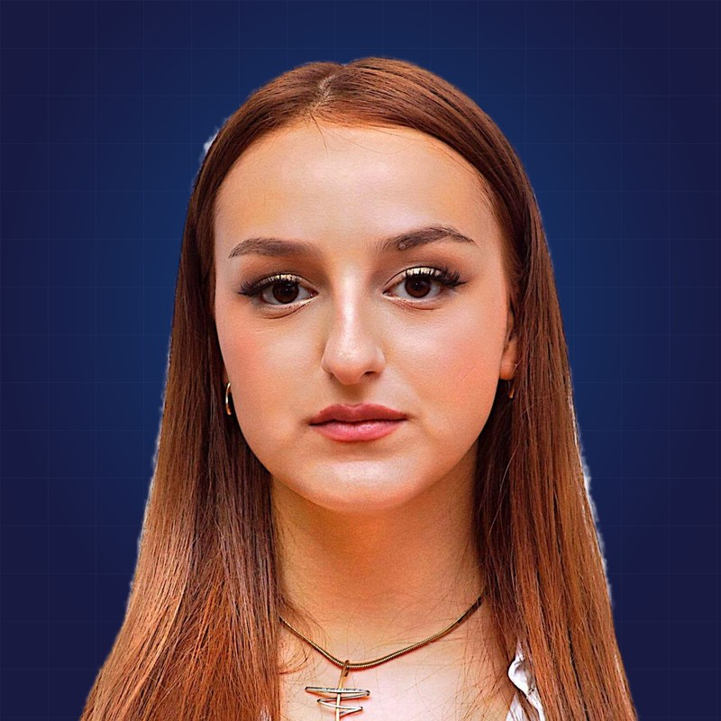

Leadership changes every year. That is the JCI principle: lead for a year, apply what you learn for a lifetime.
Iustin MazarachePresident
Alexandra VăcărețiuVice President, Marketing
Daria BicaVice President, Projects

Ruxandra MazaracheFounding MemberMircea VoicuMember
JuliaMember
PatriciaMember
AndreeaMember
Senators and honorary members
The people who kept JCI alive in Brașov and who now support the new generation.
Ilona GörögJCI SENATOR
Took part in the first attempt to bring JCI to Romania in 1994 and helped found JCI Romania in 2003.
Ionuț ȚațaJCI SENATOR
President of JCI Brașov in 2011, President of JCI Romania in 2013 and JCI World Vice President in 2014. Founder and CEO of Iceberg+.
Sorin PeligradLEGENDARY
President of JCI Brașov in 2012, Vice President for Development, South Region, JCI Romania, organiser of the JCI National Conference in Brașov and JCI Romania's representative in the JCI Europe Know-How Transfer Programme. He has supported the initiative group for 10 years.